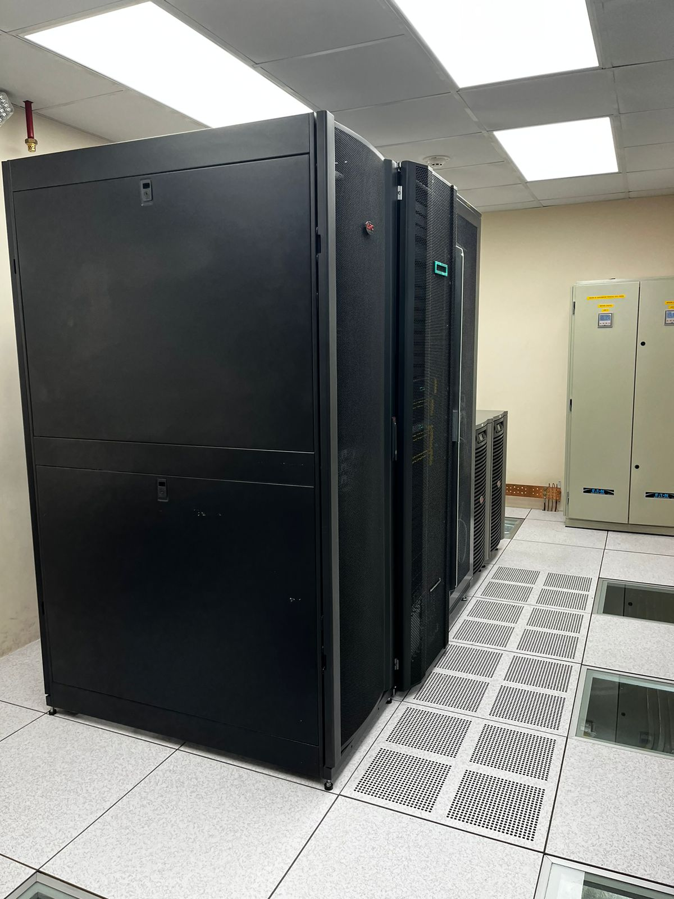

Acerca del Proyecto
Este proyecto tiene como objetivo monitorear en tiempo real los parámetros críticos (nivel de luz y ruido) del Data Center del Bloque D
de la Universidad Politécnica Salesiana, mediante el uso de sensores. Los datos recolectados por estos sensores nos permiten asegurar el
funcionamiento óptimo y la seguridad del equipo de TI.
Información sobre el Data Center
Nuestro Data Center alberga una infraestructura crítica para la universidad, incluyendo servidores,
dispositivos de almacenamiento y equipos de red. Está diseñado para garantizar la alta disponibilidad,
seguridad y eficiencia energética.
- Ubicación: Bloque D, Planta Alta
- Memoria: Hasta 3 TB de RAM distribuidos en servidores de alto rendimiento
- Almacenamiento: Más de 100 TB en sistemas de almacenamiento distribuidos y redundantes
- Procesamiento: Equipos de última generación que procesan información a 67GHz
- Unidades de Procesamiento Gráfico: Tarjetas gráficas Nvidia Tesla K80 - Nvidia Tesla V100
- Sistemas de Seguridad: Monitoreo continuo, control de acceso biométrico

Importancia del Monitoreo de Luz y Sonido
Monitorear el nivel de luz y de sonido en el Data Center es crucial para asegurar un entorno seguro y óptimo
para los equipos de TI.
-
Nivel de Luz: Mantener un nivel adecuado de iluminación es importante para la seguridad del personal
y para la correcta operación y mantenimiento de los equipos. Excesiva o insuficiente iluminación puede
causar problemas operativos y aumentar el riesgo de accidentes. Además este indicador puede llegar a complementar la
información de otros sensores, e incluso evitar falsos positivos en las alarmas contra incendios.
-
Nivel de Sonido: Monitorear el nivel de sonido ayuda a identificar ruidos anómalos que podrían indicar
fallos en los equipos de refrigeración o servidores. Un nivel de ruido adecuado también es importante para
la salud y el bienestar del personal que trabaja en el Data Center.